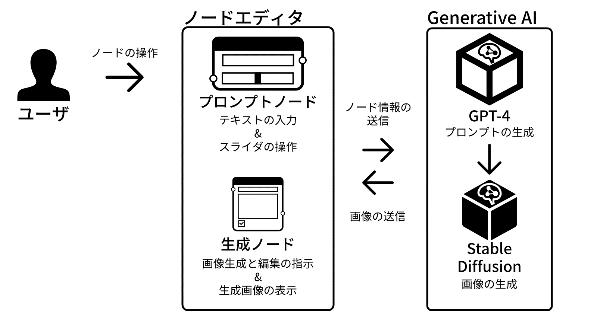
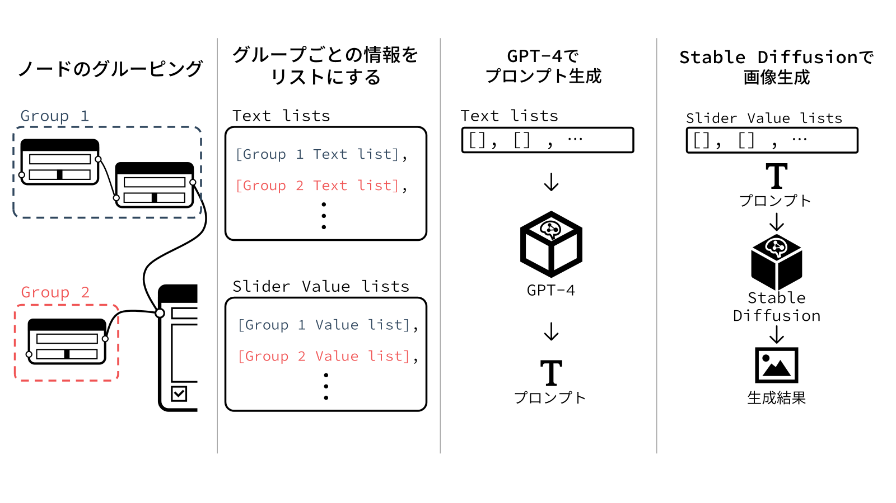

概要
Text-to-Image モデルでの画像生成では，ユーザはテキストのみで生成したい画像を指示する．生 成された画像の中には，細部の編集により表現を追い込みたいものがある．だが，これまでに提案されてき た画像生成のための編集手法では，表現を追い込む際に必要なインタフェースはあまり提供されていない． また，ノード内のパラメータを調整することで画像を生成するビジュアルプログラミングのようなシステム が多く開発されているが，生成した画像を編集できるものは少ない．本稿の目的は画像の生成と編集が一体 化したシステムによって，ユーザ自らが求める表現を追求できるようにすることである．そこで，本稿では テキストボックスとスライダからなるノードの組み合わせでプロンプトを構築し，テキスト変更やスライダ 調整によって画像の生成と編集を行う画像生成システムを提案する．ユーザはテキストの操作で画像内オ ブジェクトの部分的な入れ替え，スライダの操作で特定のオブジェクトの影響力を微調整するといった「詰 める」作業が可能となる．提案システムでの「詰める」作業によって，ユーザが求める表現に到達できる．
論文（PDF）
https://www.wiss.org/WISS2023Proceedings/data/2-A08.pdf(WISS2023)
http://id.nii.ac.jp/1001/00233553/(第71回EC研究会)
発表
第71回EC研究会研究室DB（書誌情報など）
https://www.miyashita.com/researches/4LCktHs7SkqYMWeTiWGyQS(WISS2023)
https://www.miyashita.com/researches/5iRDJVDR8vNr4LaA27UGGR(第71回EC研究会)実装
概要 ノードでプロンプトを構築していき、各ノードをいじることで画像の生成と編集が行えるノードベースシステム。Python3.10で実装。
画像生成時の仕組み ノードを一定のグループで管理し、うまいことその関係性をプロンプトに落とし込んでいます。画像の生成はStable Diffusionにお任せ。
コメント
ほとんどComfyUIみたいな実装になっていますがあしからず（少なくともキーロガーは仕込んでないです）作例の画像が楽しいのでぜひ本文をご覧ください！（第71回EC研究会の方をお勧めします）